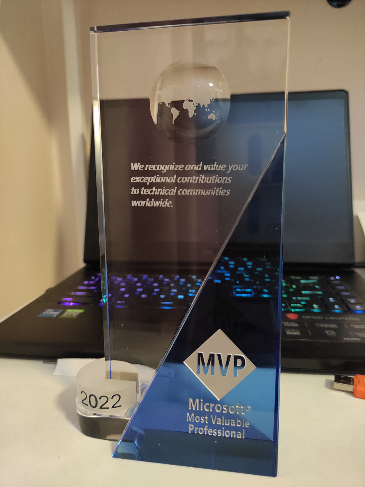

成为新 Microsoft MVP 后的注意事项
首先我自豪的宣布，我成功当选了 2022 年 2 月的 Windows Development 方向的 Microsoft MVP，顺便贴两张图证明一下。


P.S. 水晶奖杯挺帅的，还有就是真的可以用笔名兼英文名参与 Microsoft MVP 评选让自己的心结少了一些。
东西展示完了，就该说点成功评上 Microsoft MVP 后进行的一些初始操作时遇到的坑和我对应的解决方案。虽然大部分问题都可以参阅 https://github.com/newbe36524/MVP-on-board 里面的内容解决，但我还是遇到了没有被该文档提到的问题，这也是本文需要描述的。
签署 NDA 的时候在线签署向导一直卡在生成 PDF 的提示页面
每一个 Microsoft MVP 都需要签署 NDA 后才能享受到 Microsoft MVP 的权益，于是需要第一时间签署 NDA。
然而在线签署向导会卡在生成 PDF 的提示页面，通过使用 F12 开发者工具粗略看了下，看起来在想签署向导的 PDF 生成模块和 Chromium 内核的 Microsoft Edge 不大兼容。
解决方案也很简单，使用 Chromium 内核的 Microsoft Edge 的 Internet Explorer 模式，或者直接掏出虚拟机进入旧版 Windows 打开 Internet Explorer 去进行 NDA 的在线签署即可。
MVP Kit 清关的注意事项
由于 MVP Kit 进入中国大陆地区需要在海关那边完成清关工作，于是需要进行清关申报。当 MVP Kit 进入境内后，你会收到 FEDEX 清关提醒的短信和联系电话，你需要通过短信中描述的电话号码去联系他们获取快递面单发票的扫描件的 PDF 文件。
获取 PDF 以后，你就可以开始根据短信上的提示开始在线清关申报了，其中你需要按照 PDF 的内容在 MVP Kit 内包含的物品清单， 由于需要进行中文翻译，为了让后面阅读到文章的朋友在遇到类似的情况时可以轻松一点，我把我填写的相关内容整理成表以供参考。
P.S. 由于要写的内容还是比较多，为了能够让表格变得不那么长，于是一些重复内容我会在表前注明。
- 每种物品的数量皆为
1 - 每种物品的单位皆为
件 - 每种物品的货币类型皆为
美元 - 每种物品的品牌型号或用途来源皆为
MVP Award Kit - 每种物品的物品主类皆为
其他物品 - 每种物品的物品子类皆为
其他物品
| 物品名称 (英文) | 物品名称 (译文) | 材料 | 单价值 |
|---|---|---|---|
| Crystal Award Gift | 水晶奖礼品 | 塑料等 | 56.3 |
| MVP Award Box | MVP奖励盒 | 塑料等 | 1 |
| Certificate | 证书 | 纸等 | 1 |
| Certificate Holder | 证书盒 | 塑料等 | 1 |
| Certificate Plastic Cover | 证书塑料套 | 塑料等 | 1 |
| Lapel Pin | 襟针 | 金属等 | 1 |
| ID Card | 证件卡 | 塑料等 | 1 |
| Dark Navy Gift Box | 礼品盒 | 塑料等 | 1 |
| 3-Panel Insert | 三折页插页 | 纸等 | 1 |
| Foam Insert | 泡沫包装 | 泡沫等 | 1 |
| MVP Sticker Sheet | MVP贴纸 | 纸等 | 1 |
| NDA Packet Envelope | NDA资料袋信封 | 纸等 | 1 |
| Notice to Receiver | 收件人通知 | 纸等 | 1 |
| Code of Conduct Letter | 行为准则信 | 纸等 | 1 |
后记
希望本文内容可以帮到有需要的读者朋友，感谢阅读。
本博客所有文章除特别声明外，均采用 CC BY-NC-ND 4.0 协议 ，转载请注明出处！